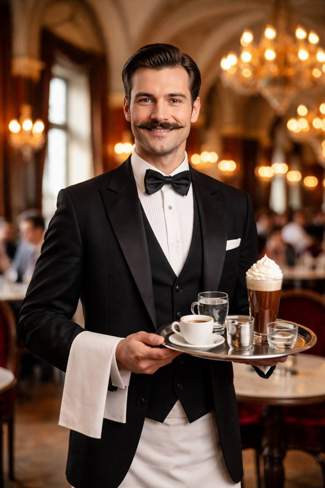
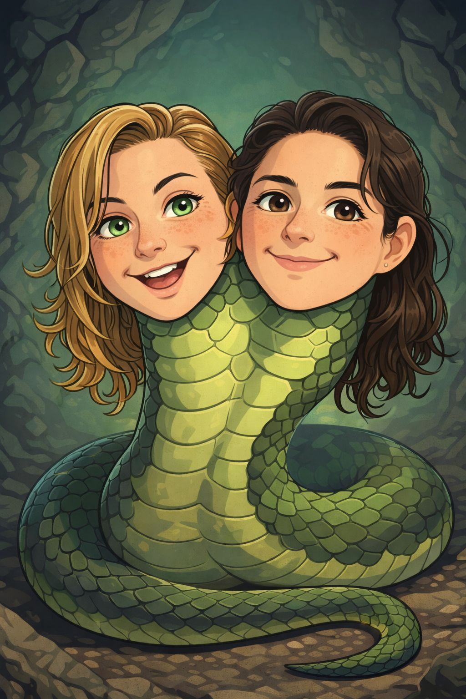
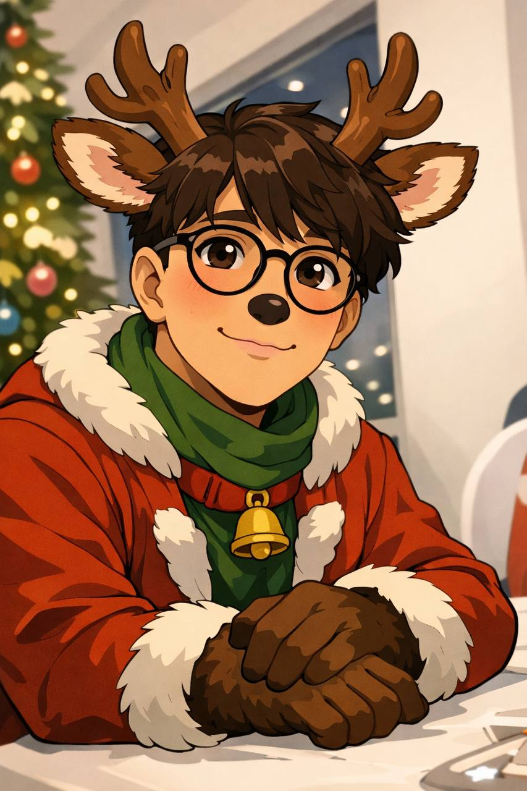
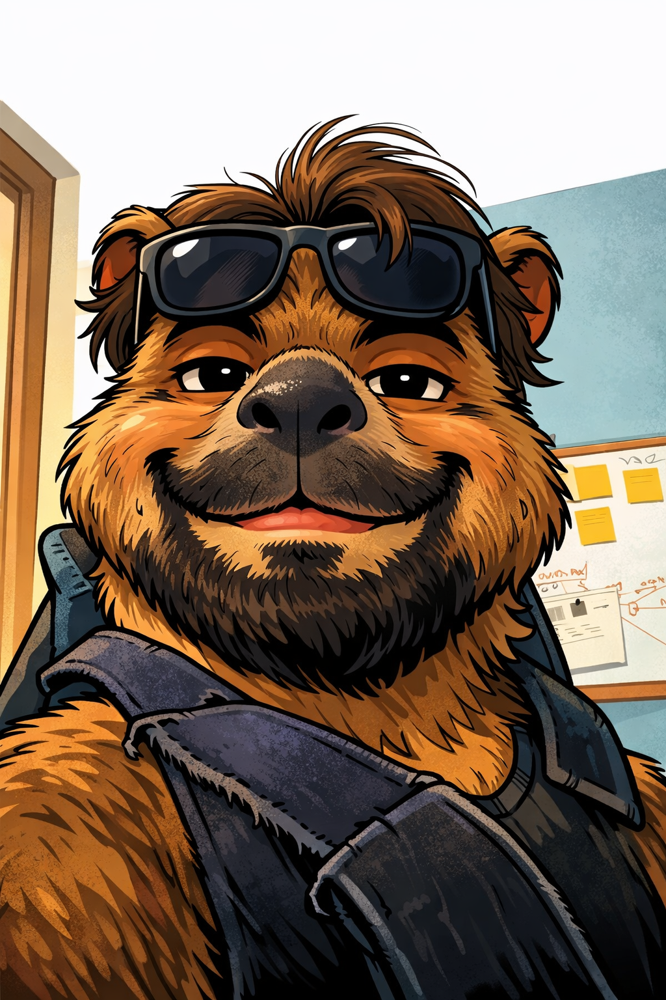
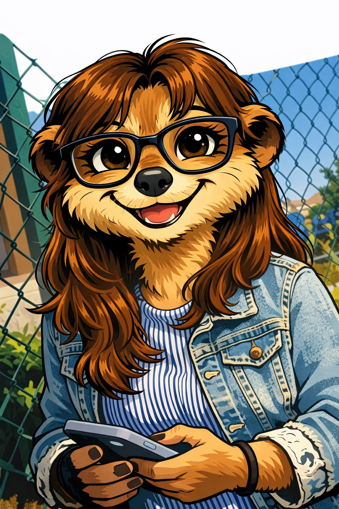
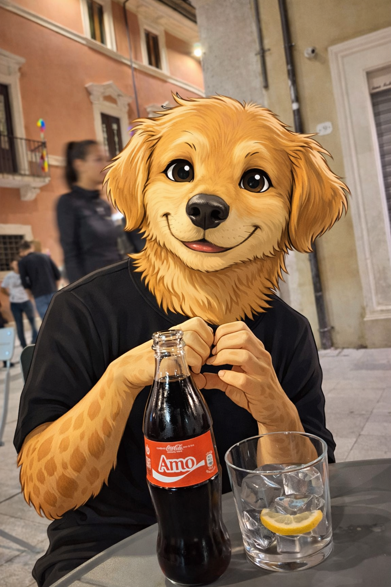
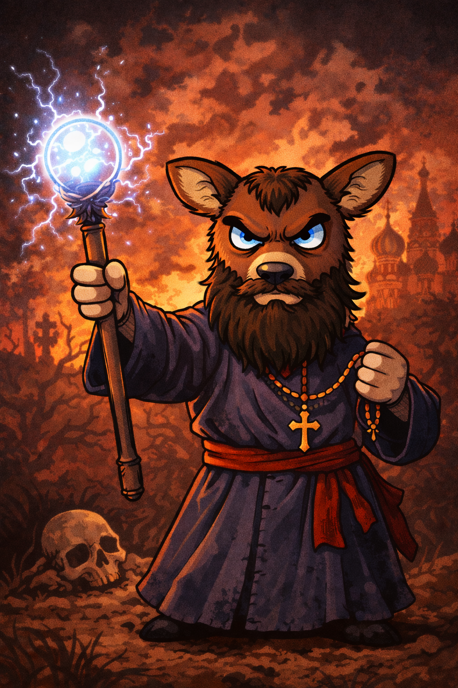

Storia
Il Cast

Il Cameriere di Vienna
Misterioso e affascinante, il Cameriere è il custode silenzioso dei segreti. Un po’ malizioso, con una fervida immaginazione, viene da Vienna e serve caffè perfetto anche alle 3 di notte. Se gli chiedi come sta, aspettati una risposta filosofica… molto very fruity.

AriAnnamaria
AriAnnamaria è una vipera a due teste della stirpe delle Viperidae. All’esterno parla come un’unica creatura, ma nella mente le due teste discutono spesso, divise da pensieri e desideri opposti. Il suo morso non è velenoso: infonde gioia e pace, placando chiunque venga colpito. Un dono nato dal suo stesso conflitto interiore, che la spinge a portare equilibrio negli altri anche quando dentro di sé regna il contrasto.

Samir
Samir è una delle renne di Babbo Natale, ma non ama particolarmente la compagnia né le lunghe riunioni al Polo Nord. È sempre il primo a voler andare via dalle situazioni sociali, infastidito dal rumore, dalle chiacchiere inutili e dall’entusiasmo forzato degli altri. Gli è difficile affezionarsi alle persone, ma quando lo fa dimostra una lealtà silenziosa e profonda. Riservato e osservatore, Samir preferisce il cielo notturno e il volo solitario alla folla, trovando pace solo nel lavoro e nella distanza.

Davide
Davide è un capibara dal carattere mite, appassionato di fotografia e attento ai piccoli dettagli. Ha paura dell’acqua, cosa insolita per la sua specie. Resta calmo quasi sempre, tranne quando lui e i suoi amici vogliono andare a Rimini e qualcuno dice “ma voi andate”: lì, anche Davide perde la pazienza. La sua presenza è un dono, anche quando non lo sa.

Ilaria
Ilaria è un suricato, la più grande e responsabile del gruppo. Vigila sempre sugli altri, attenta a ogni pericolo e pronta a prendere decisioni quando serve, con un senso del dovere che la distingue da tutti. Nonostante il suo ruolo protettivo, ha una passione insolita: ama i video horror inquietanti, che guarda con calma e curiosità, trovando conforto proprio in ciò che mette paura agli altri. Per il gruppo è una guida affidabile, silenziosa.

Aryan
Aryan è un Golden Retriever, il più piccolo del gruppo ma anche uno dei più energici. Ama gli sport, correre senza sosta e mettersi alla prova, sempre con entusiasmo contagioso. Dice spesso la frase “io sono gay” per scherzare e far ridere gli altri, usando l’ironia come modo per attirare attenzione e rompere il ghiaccio. Vivace e un po’ pestifero, porta leggerezza ovunque vada. Con Aryan, l'impossibile diventa possibile.

Peppa Pig
Peppa Pig è l’ospite inaspettata che ha conquistato tutti con semplicità e ottimismo. Nonostante le origini particolari, si è integrata subito nel gruppo, portando freschezza e innocenza in mezzo al caos. È comunista, crede nella condivisione e, quando è felice, fa ancora il suo inconfondibile verso.

Rasputin
Rasputin è un capriolo ed è l’enigma del gruppo: misterioso solo in apparenza. Dietro l’aura leggendaria si nasconde una gentilezza rara, fatta di storie incredibili, saggezza antica e un umorismo sorprendentemente moderno. Nulla è come sembra con lui, ed è per questo che tutti lo adorano.